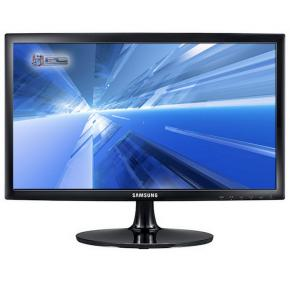
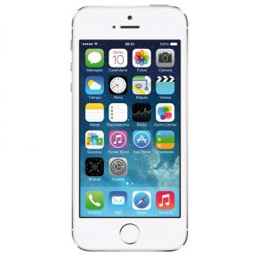
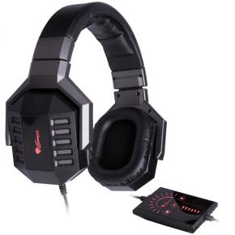
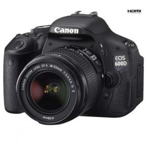
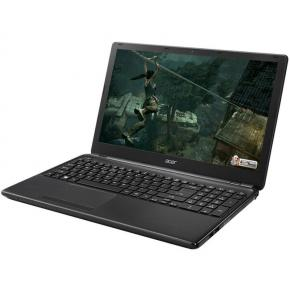

Productos |
Caracteristicas |
Precio |
|  |
- Tamaño de la pantalla 21.5 "
- Tipo de pantalla LED TN
- Resolución 1920 x 1080
- Relación de aspecto 16:09
- Brillo 200cd/m2
- Relación de contraste estático 700:1
- Ratio de Contraste Dinámico Mega DCR ∞
- Ángulo de visión (horizontal / vertical) 90 ° / 65 °
- Tiempo de respuesta 5 ms (GTG)
- Soporte de colores 16.7M
|
99€ |
|  |
Capacidad 16GB
Chips
Chip A7 con arquitectura de 64bits
Coprocesador de movimiento M7
Pantalla
Pantalla Retina
Multi-Touch panorámica de 4 pulgadas (en diagonal)
Resolución de 1.136 por 640 píxeles a 326 p/p
Contraste de 800:1 (típico)
Brillo máximo de 500 cd/m2 (típico)
Cubierta oleófuga antihuellas en la parte delantera
|
599€ |
|  |
Especificaciones
- Tarjeta de sonido 7.1 integrada USB
- Control remoto táctil
- 10 altavoces integrados
- Control de canales por separado
- Iluminación LED
- Cancelación de ruído
- Micrófono desmontable y flexible
- Respuesta de frecuencia: 20Hz ~ 20kHz
- Sensibilidad: 105dB/mW
- Impedancia 29 ohms
- Conector USB dorado
- Cable mallado textil
|
69€ |
|  |
Especificaciones
- Objetivo EF-S 18-55 mm II IS
- Sensor CMOS de 18 megapíxeles efectivos
- Procesador DIGIC 4
- Relación de aspecto 3:2
- Longitud focal: Equivalente a 1,6x la longitud focal del objetivo
- Velocidad de obturador: 30-1/4.000 s (en incrementos de 1/2 ó 1/3 de punto)
- Modo de Escenas Inteligente Automático
- Vídeo EOS en Full HD
- Guía de funciones en pantalla
- Disparos continuos de 3,7 fps
- AF de área amplia de 9 puntos
- Sensibilidad ISO 100-6400 ampliable hasta H (12800 aprox.) en incrementos de 1 punto
- Pantalla de ángulo variable de 7,7 cm (3,0") y 1.040.000 píxeles
- Filtros Creativos y Basic+
- Control de flash inalámbrico integrado
- Grabación simultánea de RAW + JPEG
- Tarjetas SD, SDHC o SDXC
- 1 batería de ión-litio recargable LP-E8
|
429€ |
|  |
Especificaciones:
- Procesador AMD A4-5000 (Quad Core 1.5GHz 2Mb 64Bits)
- Memoria RAM 1 x 4GB SODIMM DDR3 1333 (Max. 8GB 2 Slot)
- Disco duro 1TB SATA
- Almacenamiento óptico DVD±RW (±R DL)
- Display 15.6" LCD LED 16:9 1366x768 HD
- Controlador gráfico AMD Radeon HD 8330
|
349€ |